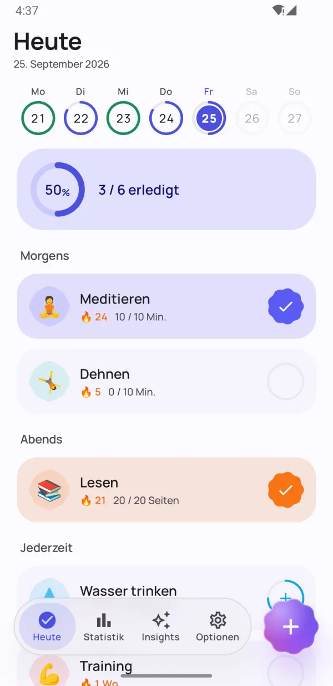
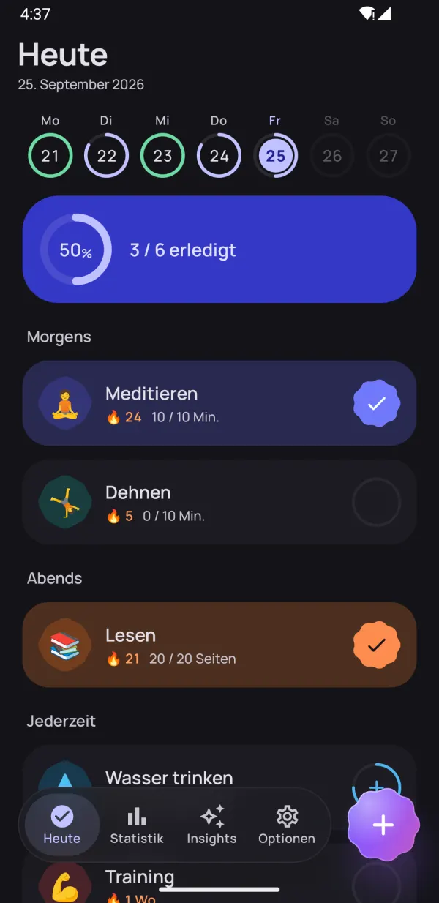
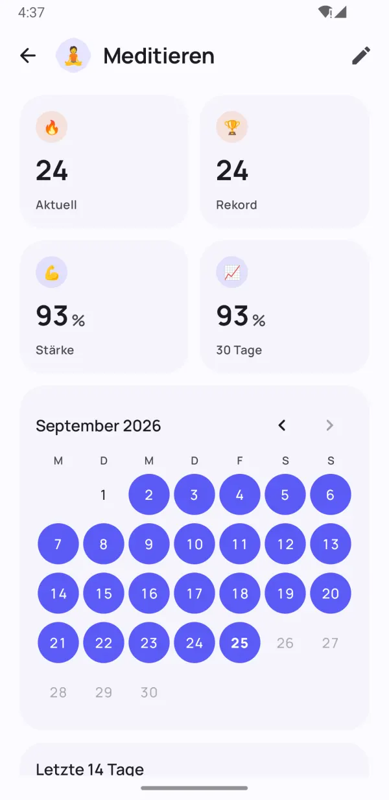
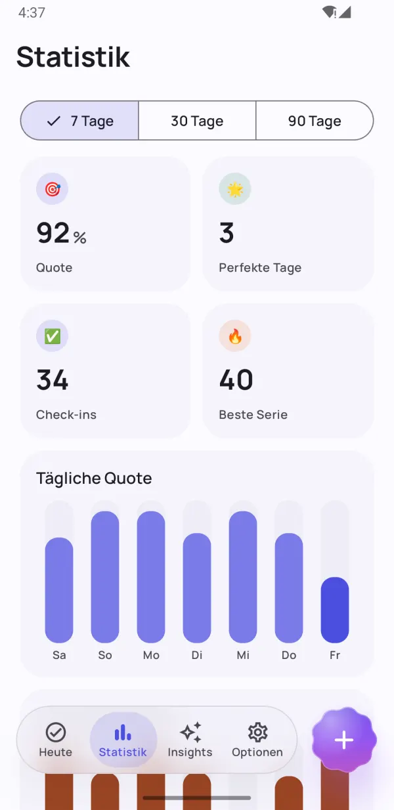
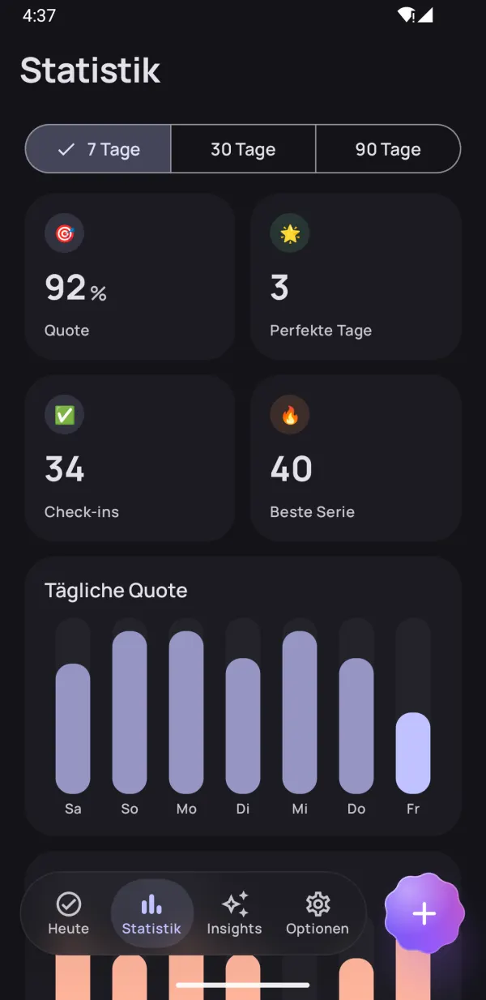
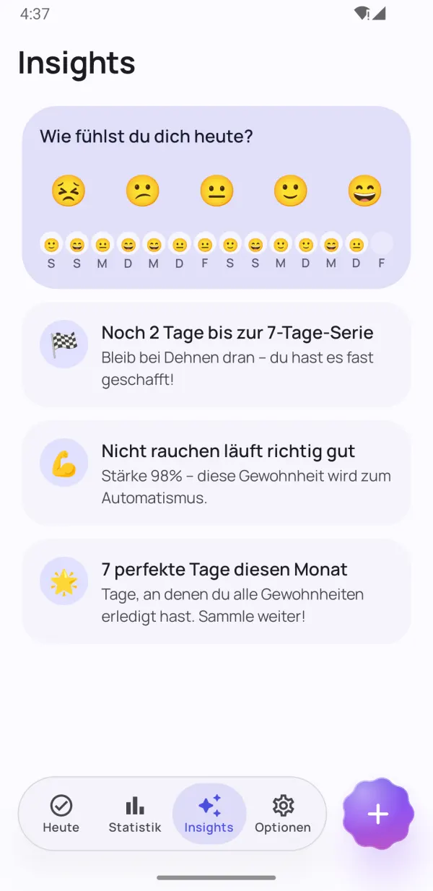
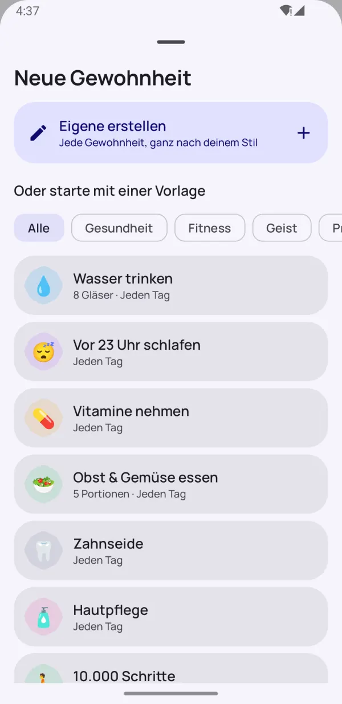
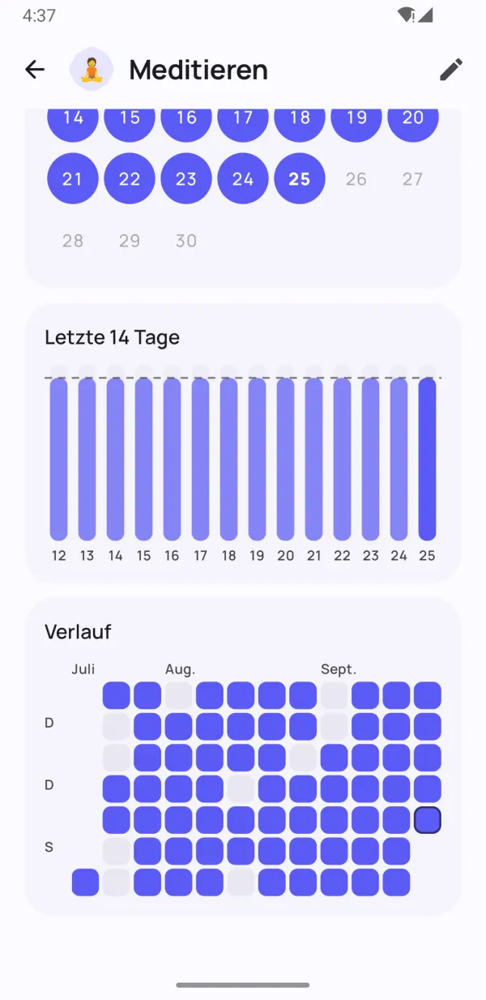

Kleine Gewohnheiten.
Große Wirkung.
Mit Dotday baust du gute Gewohnheiten auf und legst schlechte ab – ganz ohne Druck. Hak sie mit einem Tipp ab, halte deine Serie auch an stressigen Tagen am Leben und finde heraus, was für dich wirklich funktioniert.
- Kostenlos nutzbar
- Keine Anmeldung
- Daten bleiben auf dem Handy
- 13 Sprachen


Damit Gewohnheiten bleiben
Alles, was du für mehr Beständigkeit brauchst – und nichts, was dich ausbremst.
Dein ganzer Tag, nur einen Tipp entfernt
Gruppen für morgens, mittags und abends machen deine Routine zur einfachen Checkliste. Ein Tipp – erledigt.
- Ja/Nein, Zähler, Timer und Gewohnheiten zum Aufhören
- Die Wochenleiste zeigt jeden Tag auf einen Blick
- „Erledigt“ und „In 10 Min.“ direkt in der Erinnerung

Serien, die einen schlechten Tag verzeihen
Ruhetage, flexible Zeitpläne und Serien-Freezes halten dich am Ball. Die Gewohnheitsstärke zeigt, wie gefestigt eine Gewohnheit wirklich ist – nicht nur, wie lang deine Serie ist.
- Einen Tag überspringen, ohne die Serie zu verlieren
- Serien-Freezes für stressige Tage oder Krankheit
- Gewohnheitsstärke von 0 bis 100 %


Sieh deinen echten Fortschritt
Heatmaps, Kalender und Erfolgstrends zeigen genau, wie es bei dir in 7, 30 und 90 Tagen läuft.
- Heatmap für jede Gewohnheit
- Rekordserie und Erfolgsquote
- Schön im hellen und dunklen Modus

Insights, die dich motivieren
Halte deine Stimmung in einer Sekunde fest, und Dotday findet heraus, was wirklich hilft: deine besten und schwierigsten Tage und welche Gewohnheiten deine Stimmung heben.
- Stimmung mit einem Tipp erfassen
- Anstöße kurz vor dem nächsten Meilenstein
- Finde die Gewohnheiten, die dich glücklicher machen
Kleine Details, großer Unterschied
Durchdachte Funktionen, die das Tracken mühelos machen.
Widgets für den Startbildschirm
Hak die heutigen Gewohnheiten ab oder behalte eine Serie oder Heatmap im Blick – ohne die App zu öffnen.
Erinnerungen, die helfen
Gewohnheit direkt in der Benachrichtigung abhaken oder verschieben.
Integrierter Timer
Zeitbasierte Gewohnheiten bekommen einen Timer mit Live-Benachrichtigung.
Health Connect
Schritte, Schlaf und Workouts können Gewohnheiten automatisch abhaken.
40 Vorlagen
Wasser, Lesen, Training, Meditation, Nichtrauchen – in Sekunden startklar.
Plane deinen Tag
Ordne Gewohnheiten morgens, mittags und abends zu.
Notizen und Stimmungen
Füge jedem Tag eine Notiz hinzu und sieh, wie Gewohnheiten deine Stimmung beeinflussen.
Dunkelmodus & AMOLED
Material-You-Farben und ein tiefschwarzes Design für OLED-Displays.
Backup & Export
Mit Pro alles als JSON oder CSV exportieren und auf einem neuen Handy wiederherstellen.
Ein Blick in die App
Gewohnheiten, die bleiben Sieh deinen echten Fortschritt Deine Statistiken auf einen Blick Insights, die dich motivieren 
Starte sofort mit 40 Vorlagen Wunderschön im Dark Mode 
Jeder Tag, schön festgehalten Privat. Ohne Konto. Ohne Werbung.
In unter einer Minute startklar
Kein Konto, keine Einrichtung, keine Einarbeitung. Zur vollständigen Anleitung →
Gewohnheiten wählen
Nimm eine der 40 Vorlagen oder erstelle eigene – jede Gewohnheit, ganz wie du willst.
Täglich abhaken
Ein Tipp auf dem Heute-Bildschirm, im Widget oder in der Benachrichtigung.
Dranbleiben und staunen
Serien, Gewohnheitsstärke und Insights zeigen, wie dein Fortschritt wächst.
Privat von Anfang an
Kein Konto. Keine Anmeldung. Keine Werbung. Deine Gewohnheiten, Notizen und Stimmungen werden nur auf deinem Handy gespeichert – wir sehen sie nie. Datenschutzerklärung
- Kein Konto
- Keine Werbung
- Offline
- Deine Daten, dein Handy
Alles freischalten mit Pro
Die Basis-App ist für immer kostenlos. Mit Pro bekommst du unbegrenzt viele Gewohnheiten und alle Funktionen – teste es 7 Tage gratis.
- Unbegrenzt viele Gewohnheiten
- Vollständiger Verlauf und 90-Tage-Statistiken
- Alle Insights und Stimmungs-Zusammenhänge
- Automatisches Tracking mit Health Connect
- Alle Widgets
- 5 Serien-Freezes pro Monat
- Bis zu 5 Erinnerungen pro Gewohnheit
- Export als JSON und CSV
Monats- oder Jahresabo oder einmaliger Lifetime-Kauf. Jederzeit in Google Play kündbar.
Häufige Fragen
Ist Dotday kostenlos?
Ja. Die Basis-App ist für immer kostenlos: bis zu 5 Gewohnheiten, Erinnerungen, Serien, das Heute-Widget und Statistiken für 30 Tage. Dotday Pro schaltet unbegrenzt viele Gewohnheiten und alle Funktionen frei – mit 7 Tagen gratis zum Testen.
Brauche ich ein Konto?
Nein. Dotday funktioniert ohne Konto, ohne Anmeldung und ohne Internetverbindung. Einfach installieren und loslegen.
Wo werden meine Daten gespeichert?
Nur auf deinem Handy. Deine Gewohnheiten, Notizen und Stimmungen verlassen nie dein Gerät. Mit Pro kannst du jederzeit ein Backup als JSON oder CSV exportieren.
Was passiert, wenn ich einen Tag verpasse?
Dein Fortschritt ist nicht weg. Du kannst den Tag als Ruhetag überspringen, einen Serien-Freeze nutzen oder statt eines Tagesziels ein Wochenziel festlegen. Die Gewohnheitsstärke sinkt nur sanft, statt auf null zu fallen.
Welche Gewohnheiten kann ich tracken?
Vier Arten: Ja/Nein („Meditieren“), Zähler („8 Gläser Wasser“), Timer („30 Minuten lesen“) und Gewohnheiten zum Aufhören („Nicht rauchen“).
Wie übertrage ich meine Gewohnheiten auf ein neues Handy?
Öffne mit Dotday Pro Optionen → Deine Daten → Backup exportieren und speichere die JSON-Datei. Installiere Dotday auf dem neuen Handy und wähle Backup wiederherstellen – das Wiederherstellen ist kostenlos.
Gibt es eine iPhone-Version?
Noch nicht – Dotday gibt es derzeit für Android bei Google Play.
Wie kündige ich Pro?
Öffne Google Play → Profil → Zahlungen & Abos → Abos, wähle Dotday und tippe auf Kündigen. Ein Lifetime-Kauf muss nie gekündigt werden.
Fang heute mit einer kleinen Gewohnheit an
Dein zukünftiges Ich wird es dir danken. 🌱
JETZT BEIGoogle Play